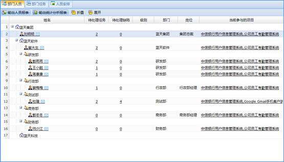
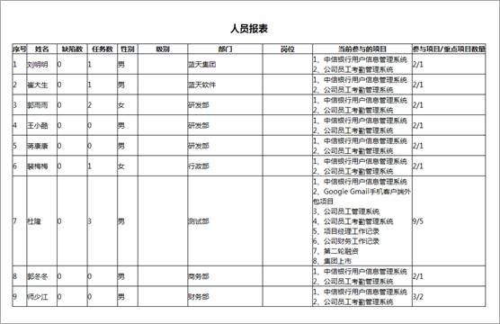
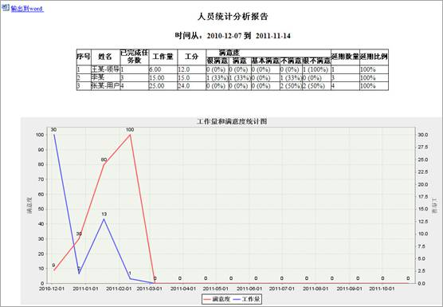
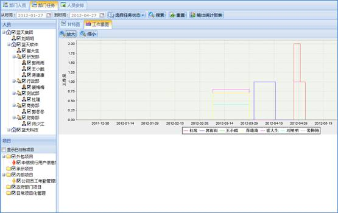
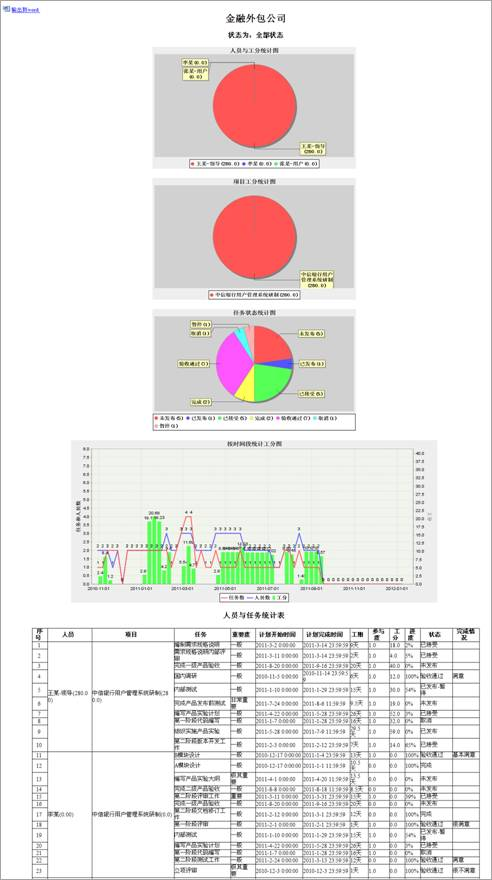
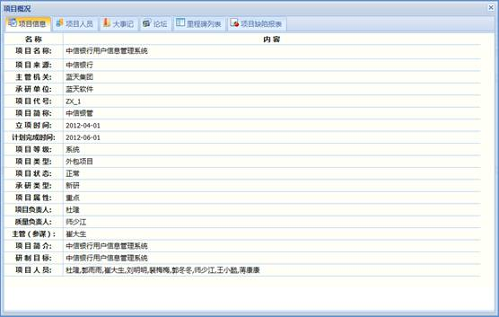
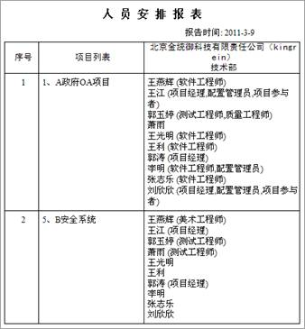

主要显示登录人员所在部门的人员参与的项目以及人员信息，还可以输出人员报表和统计分析报表。
在人员概况列表中显示登录系统的用户所在部门（单位）所有人员的人员信息、项目信息，如下图所示。

图 部门人员列表信息
4.7.1.1 人员信息
鼠标点击部门人员列表中姓名链接，可以看到人员信息，如下图所示。包括基本信息、当前任务与缺陷、参与项目、考核信息、工作记录。点击人员安排中人员的姓名链接也能弹出人员信息窗口。
图 人员信息
4.7.1.2 人员输出报表
通过工具栏的“输出人员报表”按钮可以输出自定义输出项的人员报表，如下图所示。

图 人员报表
4.7.1.3 输出统计分析报表
通过工具栏的“输出统计分析报表”按钮可以按时间段输出统计分析报表，如下图所示。

图 分析报表
主要提供展示部门人员计划任务相关信息，同时可根据需要搜索、输出人员任务统计报表。
4.7.2.1 甘特图和工作量统计图
在人员和项目列表中勾选人员和项目，在工具栏选择时间和任务状态，然后点击工具栏的“搜索”按钮，在甘特图的列表中可以查看符合条件的计划任务；选择“工作量图”标签页，在人员和项目列表中勾选人员和项目，在工具栏选择时间和任务状态，然后点击工具栏的 “搜索”按钮，可以查看到符合条件的工作量图，如下图所示。

图 工作量图
4.7.2.2 输出统计报表
点击工具栏的“输出统计报表”按钮将关注的任务信息工作量以工分的形式统计出来，如下图所示。

图 人员任务统计表
主要展示登录人员所在部门的项目以及项目人员。可以查看项目概况、单位组织结构信息，还可以输出人员安排报表。
4.7.3.1 项目概况
点击项目名称链接，系统弹出如下图所示的项目概况界面。项目概况界面包括项目信息、项目人员、大事记、论坛、节点列表、项目缺陷报表，如下图所示。

图 项目概况
4.7.3.2 单位组织结构信息
点击单位名称的链接，可以查看选择单位（部门）的组织结构和项目列表。
4.7.3.3 输出人员安排报表
点击工具栏上的“输出人员安排报表”按钮，可输出该单位（部门）项目人员安排信息报表，如下图所示。

图 人员安排报表